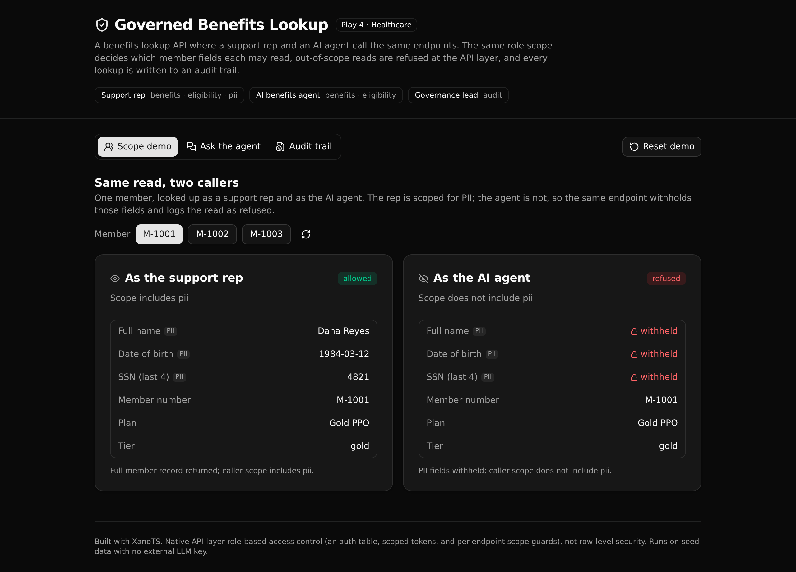

A support rep and an AI agent call the same benefits endpoints. The same role scope decides what each one may read.
Out-of-scope reads are refused at the API layer, and every lookup is written to an audit trail. The agent is bound by the caller's scope, so it answers benefit questions without ever seeing member PII it is not scoped for.

Data minimization for agents, enforced in one readable API layer.
A rep is scoped for PII; the agent is not. The same member endpoint returns the full record to the rep and withholds full name, date of birth, and SSN from the agent. The rule lives in one function both paths call.
The ask endpoint classifies a question, then runs the same governed lookup a person would, under the caller's scope. The answer's values come from governed data, not the model, so a guard cannot be talked past.
Allowed and refused reads both write an audit row. The trail is restricted to the governance lead role, so the agent writes to a log it cannot read.
Eight endpoints. Every read is scope-guarded and logged.
| Method | Path | What it enforces |
|---|---|---|
| POST | /api:gblauth/login | Authenticate a caller, mint a scoped token. |
| GET | /api:gblmembers/get/{member_id} | Read a member; PII withheld unless the caller has the pii scope. |
| GET | /api:gblbenefits/get-coverage/{member_id} | Coverage summary. Requires the benefits scope. |
| POST | /api:gblbenefits/check-eligibility | Covered by the plan, and a referral on file when needed. |
| GET | /api:gblbenefits/get-remaining-limit/{member_id} | Annual limit minus visits used. |
| POST | /api:gblagent/ask | Classify, then run the governed lookup under the caller's scope. |
| GET | /api:gblaudit/queries | The audit trail. Governance lead only (403 otherwise). |
| POST | /api:gblseed/run | Reset the environment to the demo fixtures. |
A frontend that calls the endpoints and shows the governed result.
Start a new XanoTS app from this one. Paste this into your coding agent.
Clone https://github.com/xano-scratch/agent-benefits-lookup-api and use it as the starting template for a new XanoTS app. Read its README and xano/ backend first, then adapt the tables, governed functions, and endpoints to my domain: [describe your governed-access idea here].
Or clone and deploy it as is:
git clone https://github.com/xano-scratch/agent-benefits-lookup-api.git cd agent-benefits-lookup-api npm install npx xanots login npm run xano:deploy
npm run xano:deploy for a fresh live backend and frontend, seeded
and ready in about a minute.